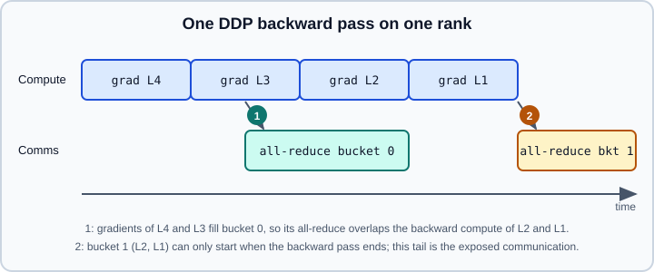

DistributedDataParallel
|
This content was generated with the assistance of AI and should be verified against the official documentation before being relied on in production. |
DistributedDataParallel (DDP) is the standard way to train a model that fits on one GPU on several GPUs or machines. Every process holds a complete copy of the model and trains it on its own slice of the data; after each backward pass the gradients are averaged across processes, so every optimizer step keeps the replicas identical. This page explains the mechanism (so that the options make sense), gives a complete, launchable training script and then covers the options and pitfalls documented for PyTorch 2.15. The launcher and process groups are in Distributed Overview, torchrun & Elastic; models that do not fit on one GPU need FSDP2 (fully_shard).
Targeted versions: Python 3.13 and PyTorch 2.15. The examples were run on Python 3.13 with PyTorch 2.15 on 2026-10-31 as two CPU processes under torchrun with the Gloo back end, which is also how to smoke-test them without GPUs.
DDP versus DataParallel
torch.nn.DataParallel is single-process and multi-threaded: one Python process scatters each batch to the GPUs, replicates the model on every forward pass and gathers the outputs. It is limited to one machine and the official tutorial describes it as usually slower than DDP, even on one machine. DDP uses one process per device, so it avoids the Python global interpreter lock contention, works across machines and supports models that span several devices. Use DDP for everything new.
How DDP works
-
Construction. DDP verifies shapes and broadcasts the parameters and buffers of rank 0 to all other ranks, so all replicas start identical even when each process initialised its own random weights. Parameters must be registered in the same order on every process and must not change after wrapping (the set of parameters, not their values).
-
Hooks. A reducer registers one autograd hook per parameter. When a parameter’s gradient is ready, its hook marks it.
-
Buckets. Gradients are grouped into buckets of about
bucket_cap_mb(25 MiB by default). Bucket assignment is fixed at construction and follows roughly the reverse order ofmodel.parameters(), because gradients tend to become ready from the last layer to the first. -
Overlap. As soon as all gradients of a bucket are ready, an asynchronous all-reduce starts on that bucket while the backward pass keeps computing earlier layers. After the last bucket finishes, the averaged gradients are written into
param.grad. The all-reduces run in bucket-index order on every rank, because mismatched order across processes can give wrong results or a hang. -
Optimizer step. Each process runs its own optimizer on identical gradients, so the replicas stay identical. No parameter broadcast is needed after the first one.

The figure is an original illustration of the mechanism described in the DDP notes (Source: https://docs.pytorch.org/docs/stable/notes/ddp.html). The notes also point out that the constructor, the forward pass and the differentiation of outputs are synchronisation points, so all processes must execute matching code; a rank that skips a forward pass or takes a different branch can hang the rest.
A complete training script
The script below trains a small classifier on synthetic data. It uses DistributedSampler, reads its identity from the environment set by torchrun and saves a checkpoint from rank 0.
# train_ddp.py
import os
import torch
import torch.distributed as dist
import torch.nn as nn
from torch.nn.parallel import DistributedDataParallel as DDP
from torch.utils.data import DataLoader, TensorDataset
from torch.utils.data.distributed import DistributedSampler
def setup():
use_cuda = torch.cuda.is_available()
local_rank = int(os.environ["LOCAL_RANK"])
if use_cuda:
torch.cuda.set_device(local_rank)
dist.init_process_group("nccl" if use_cuda else "gloo")
device = torch.device("cuda", local_rank) if use_cuda else torch.device("cpu")
return local_rank, device
def main():
local_rank, device = setup()
rank = dist.get_rank()
# Same data definition on every rank; the sampler gives each rank its shard
g = torch.Generator().manual_seed(0)
X = torch.randn(4096, 20, generator=g)
y = (X.sum(dim=1) > 0).long()
dataset = TensorDataset(X, y)
sampler = DistributedSampler(dataset, shuffle=True, drop_last=True)
loader = DataLoader(dataset, batch_size=64, sampler=sampler, num_workers=2,
pin_memory=device.type == "cuda")
model = nn.Sequential(nn.Linear(20, 64), nn.ReLU(), nn.Linear(64, 2)).to(device)
ddp_model = DDP(model, device_ids=[local_rank] if device.type == "cuda" else None)
loss_fn = nn.CrossEntropyLoss()
optimizer = torch.optim.AdamW(ddp_model.parameters(), lr=1e-3)
for epoch in range(3):
sampler.set_epoch(epoch) # different shuffle every epoch
for xb, yb in loader:
xb = xb.to(device, non_blocking=True)
yb = yb.to(device, non_blocking=True)
optimizer.zero_grad(set_to_none=True)
loss = loss_fn(ddp_model(xb), yb)
loss.backward() # all-reduce overlaps this call
optimizer.step()
if rank == 0:
print(f"epoch {epoch} last loss {loss.item():.4f}")
if rank == 0:
torch.save(ddp_model.module.state_dict(), "model.pt")
dist.barrier() # wait until the file exists
dist.destroy_process_group()
if __name__ == "__main__":
main()torchrun --standalone --nproc-per-node=2 train_ddp.pySource: https://docs.pytorch.org/tutorials/intermediate/ddp_tutorial.html and https://docs.pytorch.org/docs/stable/generated/torch.nn.parallel.DistributedDataParallel.html
Points worth noting:
-
device_idstakes one CUDA device for a single-device module and must beNonefor CPU modules and for modules that span several devices (the same holds foroutput_device). -
DistributedSampleris not optional: DDP does not shard input data. Without it every rank trains on the same samples. Callset_epocheach epoch. -
Saving
ddp_model.module.state_dict()stores keys without themodule.prefix, so the checkpoint loads into a plain model. Savingddp_model.state_dict()stores prefixed keys; to load them into a non-DDP model applytorch.nn.modules.utils.consume_prefix_in_state_dict_if_present(state_dict, "module.")first. -
Create tensors and the model on the right device before wrapping, and create the optimizer after wrapping or at least from the same parameters.
Batch size and learning rate
Each process sees its own batch, so the effective global batch is per_process_batch * world_size. The DDP reference notes that gradients are averaged, and that with M processes of batch N the gradients are M times smaller than a single-process run with batch M*N when the loss is summed instead of averaged; in most cases you can use the same learning rate for an equivalent global batch size. When you scale the global batch by adding GPUs, learning-rate scaling and warm-up become relevant; see Distributed Training Concepts and Learning-Rate Schedulers & SWA/EMA.
Checkpointing and resuming
Rank 0 saves, all ranks load. Add a barrier after the save so no rank reads a half-written file, and give every process a map_location that maps the saving device to its own, otherwise all processes load tensors onto the device they were saved from and contend for one GPU:
import torch
import torch.distributed as dist
CHECKPOINT_PATH = "model.pt"
if dist.get_rank() == 0:
torch.save(ddp_model.state_dict(), CHECKPOINT_PATH)
dist.barrier()
acc = torch.accelerator.current_accelerator()
map_location = {f"{acc}:0": f"{acc}:{dist.get_rank()}"}
ddp_model.load_state_dict(
torch.load(CHECKPOINT_PATH, map_location=map_location, weights_only=True)
)Save the optimizer, scheduler and sampler/epoch state too if the job must resume exactly; see Saving & Loading Models for weights_only and the other loading rules.
Gradient accumulation with no_sync
To accumulate gradients over several micro-batches, avoid the all-reduce on all but the last one. Disable synchronisation with ddp_model.no_sync(). The forward pass must be inside the context too, otherwise gradients still synchronise. The first forward-backward after leaving the context synchronises the accumulated gradients.
import contextlib
def accumulate_step(ddp_model, micro_batches, loss_fn, optimizer):
n = len(micro_batches)
optimizer.zero_grad(set_to_none=True)
for i, (x, y) in enumerate(micro_batches):
ctx = contextlib.nullcontext() if i == n - 1 else ddp_model.no_sync()
with ctx:
loss = loss_fn(ddp_model(x), y) / n
loss.backward()
optimizer.step()Constructor options
| Argument | Meaning and advice |
|---|---|
|
Size of the gradient buckets. Smaller buckets start communication earlier but make more, smaller all-reduces; larger buckets do the opposite. Tune only after profiling. |
|
If some parameters receive no gradient in a forward pass (conditional branches, frozen submodules in use), DDP would wait forever for them. With this flag set to |
|
Promises that the set of used and unused parameters and the control flow do not change between iterations. Enables features such as reentrant backward, multiple activation checkpoints per layer and checkpointing with unused parameters, and can improve performance. The reference suggests checking |
|
Makes |
|
Buffers (for example batch-norm running statistics) are broadcast from rank 0 at construction and synchronised during forward. In 2.15 |
|
Verifies shapes and broadcasts parameters and buffers at start-up. Set |
|
The group used for the all-reduce; the default group when |
|
Newer options documented in the 2.15 reference: skip reducing unused parameters (they must be identical on all ranks or the job may desynchronise or hang), batch the per-parameter gradient copies into per-bucket operations, and allocate buckets only during backward to reduce memory overlap. |
Source: https://docs.pytorch.org/docs/stable/generated/torch.nn.parallel.DistributedDataParallel.html
The reference also lists delay_all_reduce_named_params, param_to_hook_all_reduce, mixed_precision and device_mesh; read the reference for your release before using them. check_reduction is deprecated.
When you must use find_unused_parameters=True, declare layers in the constructor in the order they run, as the performance guide recommends. With the default False the order does not affect correctness, although parameter registration order that matches gradient-ready order gives the best overlap.
Reentrant checkpointing and DDP
Activation checkpointing (see GPU Memory & Activation Checkpointing) interacts with DDP. With use_reentrant=False it works without limitations and is the recommended form. With the legacy use_reentrant=True (the old default), DDP works only if there are no unused parameters and each layer is checkpointed at most once, and find_unused_parameters must not be combined with it. Use static_graph=True only when your graph is truly static.
Uneven inputs
If ranks have different numbers of batches (for example an iterable dataset), the ranks that finish first leave the others blocked on the next all-reduce. DistributedSampler with drop_last=True (or padding, its default) keeps counts equal for map-style datasets. For the unavoidable cases the Join context manager shadows the collective calls of finished ranks:
with ddp_model.join():
for batch in loader:
loss = ddp_model(batch).sum()
loss.backward()
optimizer.step()Source: https://docs.pytorch.org/docs/stable/generated/torch.nn.parallel.DistributedDataParallel.html
join(divide_by_initial_world_size=True, enable=True, throw_on_early_termination=False) divides gradients by the original world size by default; with False it divides by the number of active ranks. If other collectives such as SyncBatchNorm run in the loop, set throw_on_early_termination=True. Do not use join as a substitute for balanced data.
Synchronised batch normalisation
Ordinary batch normalisation computes statistics per process. With small per-process batches this hurts. torch.nn.SyncBatchNorm.convert_sync_batchnorm(model) converts batch-norm layers to a version that synchronises statistics across the process group, at the cost of extra communication per layer. Apply the conversion before wrapping in DDP. (The conversion helper is part of torch.nn; see Embeddings, Normalization, Dropout & Activations.)
Communication hooks
ddp_model.register_comm_hook(state, hook) replaces the default all-reduce with your own gradient aggregation, for example compression. A hook is registered once, before backward. It receives a bucket and must return a future containing a single tensor with the same shape as the bucket tensors. Bucket tensors are not pre-divided by the world size, so the hook must do the division itself when reducing. Hook futures work with NCCL, and partially with Gloo and MPI (not send/recv). PyTorch ships ready-made hooks under torch.distributed.algorithms.ddp_comm_hooks (for example fp16 and bf16 compression); check the package documentation for your release before relying on a specific one.
Mixed precision, compile and sharding
-
Mixed precision. Use
torch.autocastaround the forward pass and a gradient scaler for float16; DDP needs no change. See Mixed Precision with torch.amp. -
torch.compile. Wrap the model in DDP first and then compile the wrapper. The DDP notes explain that compiling first can stop AOTAutograd from overlapping the all-reduce with backward compute. Dynamo’s DDPOptimizer splits graphs at bucket boundaries to preserve the overlap; it can be inspected with
TORCH_LOGS=ddp_graphsand disabled withtorch._dynamo.config.optimize_ddp = False, which preserves correctness at a cost in speed. See Graph Breaks, Recompilation & Dynamic Shapes. -
When the model is too big. DDP stores full parameters, gradients and optimizer state on every GPU. Move to FSDP2, or combine both with a 2-D device mesh (hybrid sharding), described in DTensor, Tensor & Pipeline Parallelism.
Model parallelism inside DDP
A model that spans several GPUs (for example the first half on one device and the second half on another) can still be replicated with DDP: leave device_ids and output_device unset and wrap the multi-device module. Each process then owns several devices, so with 8 GPUs you run 4 processes. Source: https://docs.pytorch.org/tutorials/intermediate/ddp_tutorial.html
Pitfalls
-
Forgetting
DistributedSamplerorset_epoch. -
Different control flow on different ranks (a rank skips the forward pass, or evaluation runs only on rank 0 through the DDP-wrapped model). Run evaluation through
ddp_model.moduleon rank 0, or on all ranks with synchronised results. -
Unused parameters without
find_unused_parameters=True: the symptom is a hang at the first backward or an error listing parameters that did not receive gradients. -
Using
torch.autograd.grad()on a DDP model: the reference states it is not supported; gradients must accumulate in.grad. -
Modifying parameters (adding or removing) after wrapping.
-
Using
forkstart with multiple DataLoader workers on NCCL or Gloo over InfiniBand; useforkserverorspawn. -
Saving from every rank to the same file, or loading without
map_location. -
Shared GPUs: a GPU cannot be shared by two DDP processes in the same job.
-
Timeouts when ranks run at very different speeds; raise the
timeoutofinit_process_group. -
Logging the loss from rank 0 only and treating it as the global loss; average with
dist.all_reduceif you need the global value.